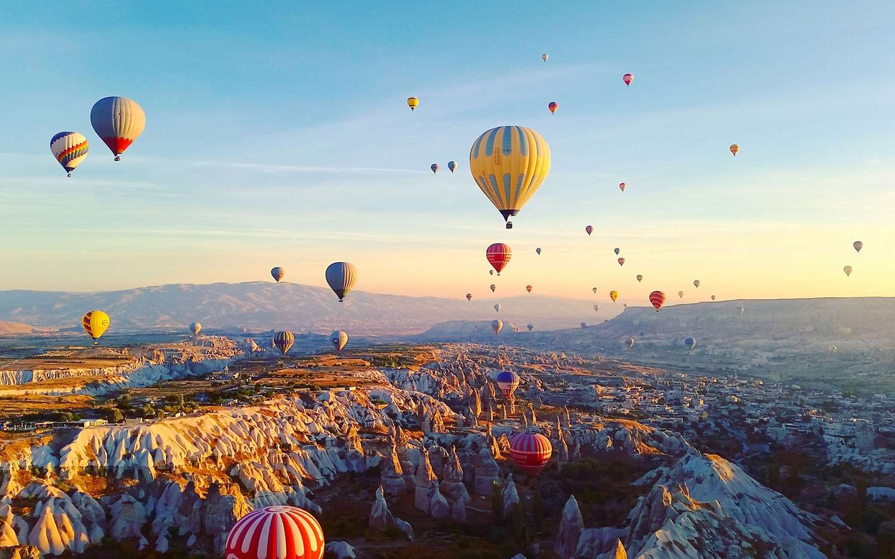

Day 1 - Arrival in Istanbul

After a long and tiring flight, I finally touched down in the enchanting city of Istanbul. As soon as I stepped out of the airport, I was greeted by a warm breeze and the hum of a bustling city that never seems to rest. The drive to the hotel was an experience in itself — passing by a mosaic of ancient stone walls, colorful street markets, and sleek modern buildings standing side by side. Even in those first few moments, I felt the unique heartbeat of this place: a perfect blend of East and West, old and new, tradition and innovation. It was clear that this journey would be unlike any other.
Day 2 - Exploring Sultanahmet

Today was an unforgettable dive into Istanbul's rich history. I spent the day wandering through the heart of the city — the legendary Sultanahmet district. Every corner of this area tells a story, with cobblestone streets leading to some of the world’s most iconic landmarks.
My first stop was the awe-inspiring Hagia Sophia. Standing beneath its massive dome, surrounded by golden mosaics and the echoes of centuries past, I was overwhelmed by its beauty and grandeur. Just a short walk away, the Blue Mosque awaited with its elegant minarets and intricate interior, washed in soft shades of blue tiles that seemed to glow in the afternoon light.
After hours of exploring, I sat down at a local street-side restaurant and treated myself to a freshly grilled kebab — smoky, flavorful, and absolutely satisfying. As the sun set over the domes and rooftops, I felt deeply grateful to witness this magical blend of culture, architecture, and hospitality.
Day 3 - Bazaar and Bargains

This afternoon, I immersed myself in one of Istanbul’s most vibrant and chaotic experiences — the Grand Bazaar. As I stepped inside, I was instantly surrounded by a maze of winding alleys filled with more than 4,000 shops, each overflowing with colorful textiles, shimmering lanterns, handcrafted ceramics, and intricate jewelry.
The scent of exotic spices hung heavy in the air, blending with the aromas of fresh tea and roasted nuts coming from small stalls tucked between shops. The sounds of lively conversations and the rhythmic call of vendors filled the space, creating a buzz unlike anything I’d experienced before.
Bargaining was definitely part of the fun — and the challenge. I haggled (poorly at first) over the price of a handwoven scarf and a beautifully detailed mosaic lamp. After some back-and-forth and a few smiles, I walked away with a couple of unique souvenirs that I’ll treasure. The whole experience was overwhelming in the best way possible — a true feast for the senses.
Day 4 - Bosphorus Cruise
Today I took a scenic boat tour along the Bosphorus Strait, the natural waterway that separates Europe and Asia. As the boat gently cruised between the two continents, I was treated to some of the most breathtaking views Istanbul has to offer.
On both sides of the strait, majestic Ottoman palaces, ancient fortresses, and charming wooden mansions lined the shores. The Dolmabahçe Palace stood out with its elegant European architecture, while the Rumeli Fortress, with its stone towers and steep walls, reminded me of the city's deep military past.
Sailing under the Bosphorus Bridge, which connects two continents, was a surreal moment — it’s incredible to think how Istanbul bridges not only land but also cultures, histories, and ways of life.
The sun was already seated, but the lights of the boat gave everything a magical aura. Reflections danced on the dark water as the illuminated cruise slowly goes. It felt peaceful, almost cinematic, and gave me a whole new appreciation for Istanbul’s beauty at night.
Day 6 - Hot Air Balloons in Cappadocia

I didn’t get a chance to write yesterday — I was on the move! After leaving Istanbul, I took a long but scenic journey to Cappadocia, located in central Turkey. The landscape changed dramatically along the way, from the bustling city to wide-open plains and surreal rock formations. It was a tiring day of travel, but absolutely worth it.
This morning, I woke up before dawn, wrapped myself in a warm jacket, and headed out to experience one of the most iconic sights in the world: the hot air balloons rising over Cappadocia.
As the first light of sunrise painted the sky in shades of orange and pink, I boarded a hot air balloon and gently lifted off the ground. Floating above the valleys and "fairy chimneys" was nothing short of magical.
From up there, I had a panoramic view of the strange and beautiful landscape — ancient cave homes, winding paths, and other balloons drifting silently in the morning air. It felt like I was dreaming.
The flight was peaceful and awe-inspiring. Touching down again, I was filled with a deep sense of wonder and gratitude. Riding a hot air balloon over Cappadocia is something I’ll remember for the rest of my life.